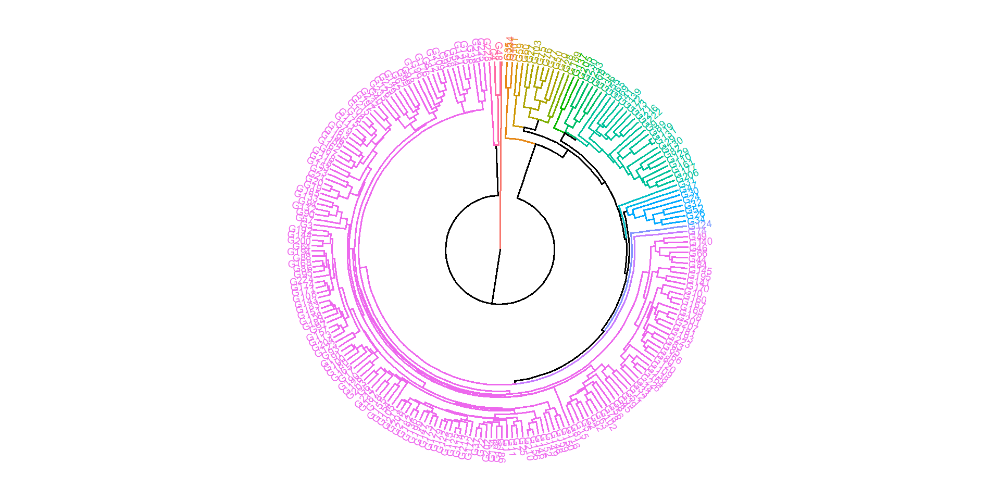

07: Diversidade genética entre acessos de linho (Linum usitatissimum, L.) baseada em caracteres morfoagronômicos
1 Libraries
To reproduce the examples of this material, the R packages the following packages are needed.
2 Data
df <-
rio::import("data/data_mgidi.csv") |>
remove_rows_na()3 Adjust by season effect
df_man <-
df |>
remove_cols(gen)
mod <- manova(cbind(ac, ap, nc, ng, areac, nr, mc, rgpla, icc, ngcap, mmg) ~ epoca,
data = df_man)
df_resi <-
residuals(mod) |>
as.data.frame() |>
mutate(gen = df$gen) |>
column_to_rownames("gen")4 Distances
dists <- clustering(df_resi,
scale = TRUE,
clustmethod = "average",
nclust = 16)
fviz_dend(dists$hc,
k = 16,
cex = 0.5,
repel = TRUE,
type = "phylo") +
theme_void()
ggsave("figs/phylo.jpg",
dpi = 600,
width = 8,
height = 8)5 Médias
df2 <-
df |>
mutate(groups = dists$data |> pull(groups)) |>
as_factor(groups)
df3 <-
df2 |>
select(groups, mmg, rgpla, ng) |>
pivot_longer(-groups) |>
filter(groups %in% c(2, 3, 4, 11, 15)) |>
group_by(groups, name) |>
summarise(mean = mean(value),
sd = sd(value),
n = n(),
se = sd / sqrt(n))
df_mean <-
df |>
mean_by(.vars = c(mmg, rgpla, ng)) |>
pivot_longer(everything())
df_meansel <-
df3 |>
mean_by(name)6 Stats
# correct season effect
ggplot(df3, aes(x = groups, y = mean, fill = groups)) +
geom_col() +
geom_hline(data = df_mean,
aes(yintercept = value),
linetype = 3,
linewidth = 1) +
geom_hline(data = df_meansel,
aes(yintercept = mean),
linetype = 8,
color = "blue",
linewidth = 1) +
geom_errorbar(aes(ymin = mean - se,
ymax = mean + se),
width = 0.2) +
facet_wrap(~name, scales = "free") +
theme_bw(base_size = 14) +
scale_y_continuous(expand = expansion(c(0, 0.1))) +
geom_text(aes(y = 0, label = glue::glue("n = {n}")),
vjust = -1) +
labs(x = "Grupos",
y = "Valor médio do caractere",
fill = "Grupos")
ggsave("figs/mean_clusters.jpg",
dpi = 600,
width = 12,
height = 6)7 Section info
sessionInfo()
## R version 4.2.2 (2022-10-31 ucrt)
## Platform: x86_64-w64-mingw32/x64 (64-bit)
## Running under: Windows 10 x64 (build 22621)
##
## Matrix products: default
##
## locale:
## [1] LC_COLLATE=Portuguese_Brazil.utf8 LC_CTYPE=Portuguese_Brazil.utf8
## [3] LC_MONETARY=Portuguese_Brazil.utf8 LC_NUMERIC=C
## [5] LC_TIME=Portuguese_Brazil.utf8
##
## attached base packages:
## [1] stats graphics grDevices utils datasets methods base
##
## other attached packages:
## [1] ggstatsplot_0.11.0 factoextra_1.0.7 metan_1.18.0 lubridate_1.9.2
## [5] forcats_1.0.0 stringr_1.5.0 dplyr_1.1.1 purrr_1.0.1
## [9] readr_2.1.4 tidyr_1.3.0 tibble_3.2.1 ggplot2_3.4.1
## [13] tidyverse_2.0.0 rio_0.5.29
##
## loaded via a namespace (and not attached):
## [1] TH.data_1.1-1 minqa_1.2.5 colorspace_2.1-0
## [4] ggsignif_0.6.4 estimability_1.4.1 parameters_0.20.2
## [7] rstudioapi_0.14 ggpubr_0.6.0 farver_2.1.1
## [10] ggrepel_0.9.3 fansi_1.0.4 mvtnorm_1.1-3
## [13] mathjaxr_1.6-0 codetools_0.2-18 splines_4.2.2
## [16] knitr_1.42 polyclip_1.10-4 zeallot_0.1.0
## [19] jsonlite_1.8.4 nloptr_2.0.3 broom_1.0.4
## [22] ggforce_0.4.1 compiler_4.2.2 emmeans_1.8.5
## [25] backports_1.4.1 Matrix_1.5-3 fastmap_1.1.1
## [28] cli_3.6.1 tweenr_2.0.2 htmltools_0.5.5
## [31] tools_4.2.2 igraph_1.4.1 lmerTest_3.1-3
## [34] coda_0.19-4 gtable_0.3.3 glue_1.6.2
## [37] Rcpp_1.0.10 carData_3.0-5 cellranger_1.1.0
## [40] vctrs_0.6.1 nlme_3.1-160 insight_0.19.1
## [43] xfun_0.37 openxlsx_4.2.5.2 lme4_1.1-32
## [46] timechange_0.2.0 lifecycle_1.0.3 rstatix_0.7.2
## [49] dendextend_1.16.0 MASS_7.3-58.3 zoo_1.8-11
## [52] scales_1.2.1 ragg_1.2.5 hms_1.1.3
## [55] sandwich_3.0-2 rematch2_2.1.2 RColorBrewer_1.1-3
## [58] yaml_2.3.7 curl_5.0.0 gridExtra_2.3
## [61] reshape_0.8.9 stringi_1.7.12 paletteer_1.5.0
## [64] bayestestR_0.13.0 boot_1.3-28 zip_2.2.2
## [67] systemfonts_1.0.4 rlang_1.1.0 pkgconfig_2.0.3
## [70] evaluate_0.20 lattice_0.20-45 labeling_0.4.2
## [73] patchwork_1.1.2 htmlwidgets_1.6.2 tidyselect_1.2.0
## [76] GGally_2.1.2 plyr_1.8.8 magrittr_2.0.3
## [79] R6_2.5.1 generics_0.1.3 multcomp_1.4-23
## [82] pillar_1.9.0 haven_2.5.2 foreign_0.8-83
## [85] withr_2.5.0 survival_3.4-0 datawizard_0.7.0
## [88] abind_1.4-5 performance_0.10.2 car_3.1-1
## [91] utf8_1.2.3 correlation_0.8.3 tzdb_0.3.0
## [94] rmarkdown_2.20 viridis_0.6.2 grid_4.2.2
## [97] readxl_1.4.2 data.table_1.14.8 digest_0.6.31
## [100] xtable_1.8-4 numDeriv_2016.8-1.1 textshaping_0.3.6
## [103] statsExpressions_1.5.0 munsell_0.5.0 viridisLite_0.4.1